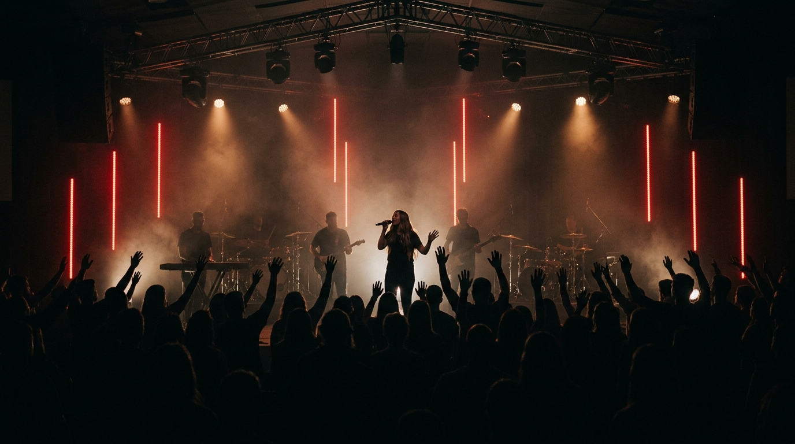
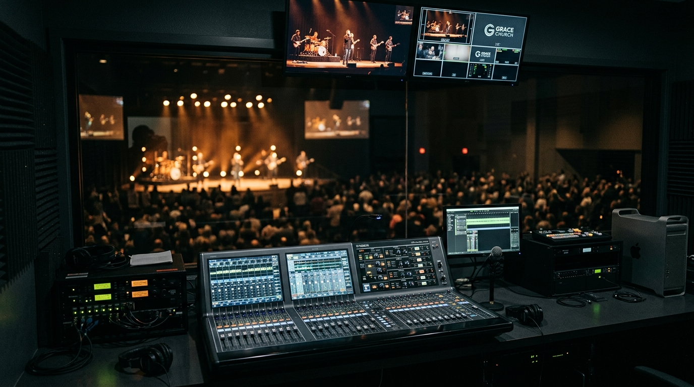
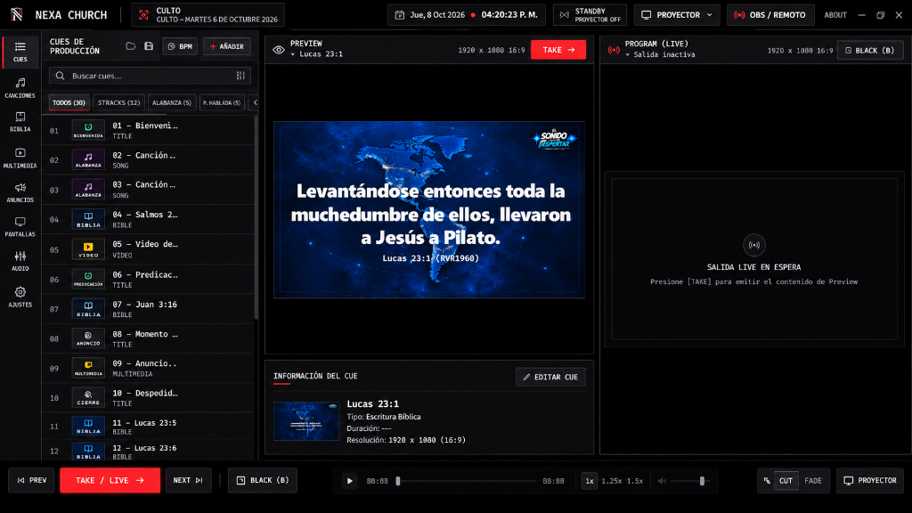
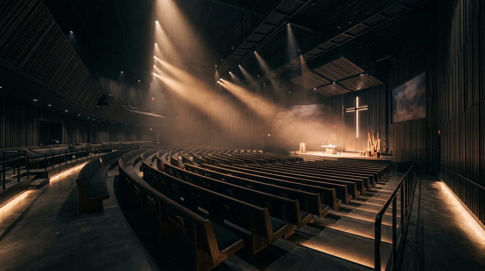
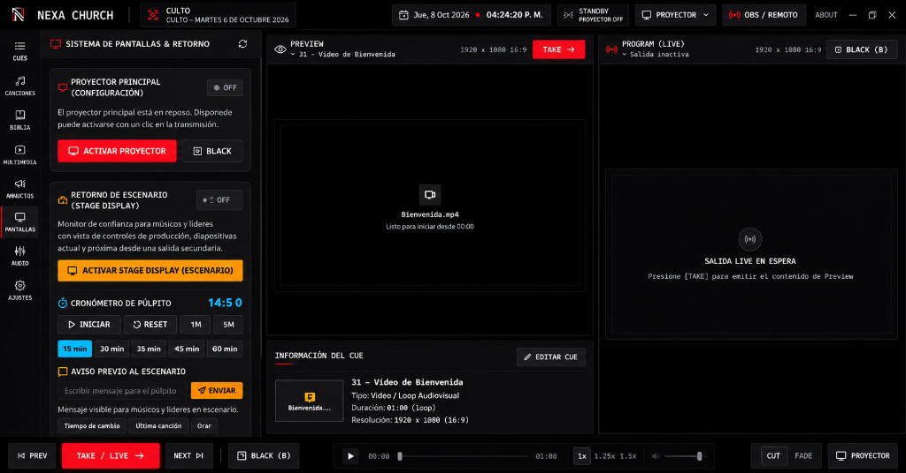

NEXA Church es un software de presentación diseñado para acompañar la adoración, la palabra y cada momento de tu iglesia, con una interfaz clara, estable y enfocada en lo esencial.

NEXA Church integra las herramientas indispensables para la alabanza, la predicación y la transmisión en una sola interfaz estable, rápida y sin depender de internet.

NEXA Church reúne las herramientas que necesitas para proyectar con excelencia: Biblia, letras, multimedia, anuncios y más, con un flujo de trabajo simple y confiable.



Funciona de forma local, sin depender de internet, para que puedas enfocarte en lo más importante: la adoración y la palabra.
NEXA Church está optimizado para funcionar con alta eficiencia y máxima estabilidad en equipos Windows estándar.
Diseñado para funcionar de manera completamente autónoma sin depender de conexión a internet en el auditorio. Rendimiento nativo e instalación rápida para tu equipo de transmisión y culto:
Instalador ejecutable de sistema
Paquete universal DMG para Mac